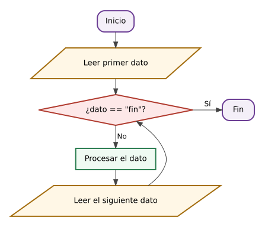

Qué vas a aprender en esta página
- a hacer que un programa repita instrucciones mientras se cumpla una condición, con
while; - a pedir datos «hasta que el usuario quiera parar»;
- a contar y a sumar datos mientras se repite;
- a calcular la media, el mínimo y el máximo de unas medidas de laboratorio.
El bucle while
Un bucle es un grupo de instrucciones que se repite. La instrucción while («mientras») repite su grupo de instrucciones mientras una condición sea verdadera. Funciona así: Python comprueba la condición; si es verdadera, ejecuta el grupo y vuelve arriba a comprobarla otra vez; cuando es falsa, sale del bucle y sigue con lo que haya debajo.
Igual que en el if, la línea del while termina en dos puntos y lo que se repite va sangrado.
n = 1
while n <= 5:
print(n)
n = n + 1
print("Fin")En la consola
1
2
3
4
5
FinTraza del bucle (cada fila es una vuelta):
| Vuelta | ¿n <= 5? | Escribe | n al terminar la vuelta |
|---|---|---|---|
| 1.ª | 1 <= 5 → sí | 1 | 2 |
| 2.ª | 2 <= 5 → sí | 2 | 3 |
| 3.ª | 3 <= 5 → sí | 3 | 4 |
| 4.ª | 4 <= 5 → sí | 4 | 5 |
| 5.ª | 5 <= 5 → sí | 5 | 6 |
| — | 6 <= 5 → no: sale del bucle |
Al salir del bucle, Python continúa con la línea que está en el margen: escribe «Fin».
Cuidado con el bucle infinito
Si dentro del bucle nada cambia la condición, esta será verdadera siempre y el bucle no terminará nunca. Pruébalo: quita la línea n = n + 1 y ejecuta. El terminal se llenará de unos sin parar. Para detenerlo, pulsa Stop. La regla es: dentro de todo while tiene que haber algo que, tarde o temprano, haga falsa la condición.
Pedir datos hasta que el usuario quiera: el centinela
A veces no sabemos cuántos datos va a escribir el usuario. La solución es acordar una palabra para terminar (por ejemplo, fin), que se llama centinela. El programa sigue pidiendo datos mientras lo escrito no sea esa palabra. Hay que pedir el primer dato antes del bucle (para que la condición tenga algo que comprobar) y el siguiente, al final de cada vuelta:

entrada = input("Dato (o fin): ")
while entrada != "fin":
print("Recibido:", entrada)
entrada = input("Dato (o fin): ")
print("Programa terminado")Si el usuario escribe hola, 42 y fin
Dato (o fin): hola
Recibido: hola
Dato (o fin): 42
Recibido: 42
Dato (o fin): fin
Programa terminadoContar y acumular
Dentro de un bucle es muy habitual llevar la cuenta de algo. Hay dos formas de hacerlo:
- Un contador cuenta cuántas veces pasa algo. Empieza valiendo 0 y en cada vuelta se le suma 1:
n = n + 1. - Un acumulador va sumando valores. Empieza valiendo 0 y en cada vuelta se le suma el dato nuevo:
total = total + x.
Los dos se ponen a cero antes del bucle. Si lo hicieras dentro, volverían a cero en cada vuelta y perderías la cuenta.
Ejemplo paso a paso: la potencia de todos los aparatos
Problema: queremos saber la potencia total de los aparatos que hay en una habitación. El usuario escribe la potencia de cada uno y, cuando termina, escribe fin.
1. Analizar. Entradas: las potencias, sin saber cuántas habrá. Salidas: cuántos aparatos hay y la potencia total. Proceso: un contador para los aparatos y un acumulador para la potencia.
2. Planificar.
total = 0 y n = 0
pedir el primer dato
mientras el dato no sea "fin":
sumar el dato al total
sumar 1 a n
pedir el siguiente dato
escribir n y el total3. Escribir el código.
# Ejemplo resuelto: consumo acumulado de varios aparatos
total = 0 # acumulador
n = 0 # contador
dato = input("Potencia del aparato en W (o fin): ")
while dato != "fin":
total = total + float(dato)
n = n + 1
dato = input("Potencia del aparato en W (o fin): ")
print("Aparatos:", n)
print("Potencia total:", total, "W")4. Comprobar. 2000 + 60 + 850 = 2910 W:
Potencia del aparato en W (o fin): 2000
Potencia del aparato en W (o fin): 60
Potencia del aparato en W (o fin): 850
Potencia del aparato en W (o fin): fin
Aparatos: 3
Potencia total: 2910.0 WEl mínimo y el máximo sobre la marcha
Para saber cuál es el dato más pequeño de todos, se guarda en una variable el más pequeño visto «hasta ahora». Cada vez que llega un dato nuevo, se compara con él: si el nuevo es menor, pasa a ser el mínimo. Con el máximo se hace lo mismo, al revés.
El truco está en el principio: el primer dato es a la vez el mínimo y el máximo, porque todavía no hay otro con el que compararlo. A partir del segundo, se compara:
if n == 1: # es el primer dato
minimo = x
maximo = x
if x < minimo:
minimo = x
if x > maximo:
maximo = xPráctica 5a · Estadística de unas medidas
Dónde se hace: en una pestaña nueva de online-python llamada 5a_medidas.py. Pulsa + junto a las pestañas, escribe 5a_medidas y pulsa Intro (el editor añade .py solo).
Diagrama de flujo: antes de escribir el código, dibuja el diagrama de flujo del programa en draw.io (cómo se hace, en la página 4) y expórtalo a PNG con el nombre 5a_medidas.drawio.png. Se entrega junto al ZIP de la página y se evalúa como documentación técnica: tiene que entenderse sin ayuda, usar bien las figuras, llevar «Sí» y «No» en las salidas de cada decisión y corresponderse con tu programa.
En el laboratorio se mide varias veces la misma pieza, porque cada medida tiene un pequeño error. Con todas las medidas se calcula la media (la suma dividida entre el número de medidas), que es la mejor estimación del valor real, y el rango (la diferencia entre la mayor y la menor), que indica cuánto varían.
Qué tienes que hacer: un programa que pida medidas en milímetros hasta que el usuario escriba fin y después escriba cuántas medidas hay, la media, la mínima, la máxima y el rango.
- Planifica con el diagrama de flujo en draw.io. Necesitas un contador, un acumulador, el mínimo y el máximo.
- Piensa qué debe pasar si el usuario escribe
finsin dar ninguna medida. Para la media habría que dividir entre cero, y eso da error. El programa debe avisar en lugar de fallar. - Escribe el programa y compruébalo con los dos casos de abajo.
Con cinco medidas
Medida en mm (o fin): 4.7
Medida en mm (o fin): 4.8
Medida en mm (o fin): 4.6
Medida en mm (o fin): 4.9
Medida en mm (o fin): 4.7
Medida en mm (o fin): fin
Medidas: 5
Media: 4.74
Mínimo: 4.6 Máximo: 4.9
Rango: 0.3Sin ninguna medida
Medida en mm (o fin): fin
No hay medidas¿Te has atascado? Abre aquí el programa con huecos
Este es el programa de la práctica con algunas partes borradas. Cada ____ es una palabra, un número o un signo que ya has visto en esta página o en las anteriores. Cópialo en tu pestaña, sustituye cada hueco por lo que falta y ejecútalo para comprobar que funciona. Intenta primero hacerlo sin abrir esto: se aprende mucho más.
# 5a_medidas: estadística de medidas sin guardarlas
n = 0
suma = 0
dato = input("Medida en mm (o fin): ")
while dato != "fin":
x = float(dato)
n = n + 1
suma = suma + x
if n == 1:
minimo = x
maximo = x
if x < ____:
minimo = x
if x > maximo:
____
dato = input("Medida en mm (o fin): ")
if n == 0:
print("No hay medidas")
else:
print("Medidas:", n)
print("Media:", round(____, 3))
print("Mínimo:", minimo, " Máximo:", maximo)
print("Rango:", round(maximo - minimo, 3))Práctica 5b · Piezas fuera de tolerancia (un paso más)
Dónde se hace: en una pestaña nueva de online-python llamada 5b_tolerancia.py. Pulsa + junto a las pestañas, escribe 5b_tolerancia y pulsa Intro (el editor añade .py solo).
Esta práctica la tiene que intentar todo el mundo. Es un paso más difícil que las anteriores: aplicas lo de la página a un problema nuevo y con menos ayuda. Si no te sale entera, no la dejes en blanco: entrega lo que hayas conseguido y escribe al principio del programa un comentario que explique hasta dónde has llegado y qué te falta. Forma parte de tu colección de programas.
Ninguna pieza sale exactamente con la medida del plano. Por eso el plano indica una tolerancia: cuánto puede apartarse la medida real de la ideal (la nominal). Una cota de 50 ± 0,1 mm admite piezas que midan entre 49,9 y 50,1 mm; las demás se rechazan.
Qué tienes que hacer: un programa que pida la medida nominal y la tolerancia, después las medidas de las piezas hasta fin, avise de cada pieza fuera de tolerancia y diga al final cuántas se rechazan. Te servirá abs(x), que da el valor absoluto de un número (el número sin signo): abs(-0.15) vale 0.15.
Así debe comportarse
Cota nominal (mm): 50
Tolerancia ± (mm): 0.1
Medida (o fin): 50.02
Medida (o fin): 49.85
Fuera de tolerancia: 49.85
Medida (o fin): 50.08
Medida (o fin): 50.12
Fuera de tolerancia: 50.12
Medida (o fin): fin
Piezas rechazadas: 2Los decimales del ordenador no son exactos
El ordenador guarda los números con decimales con una pequeñísima imprecisión. Por ejemplo, 50.1 - 50 no da exactamente 0.1, sino 0.10000000000000142. Por eso una pieza que mida justo el límite puede salir «fuera». No es un fallo de tu programa; basta con que lo sepas.
Antes de cerrar el navegador: guarda y sube tu trabajo
Tus programas solo están guardados en el navegador de este ordenador, y los ordenadores del aula lo borran todo al apagarse: las pestañas y también lo que hayas descargado. Por eso, antes de que acabe la clase, descarga tus programas y súbelos a Moodle, aunque no hayas terminado la página: lo que está en Moodle no se pierde. Comprueba primero que tienes estas pestañas, una por práctica:
5a_medidas.py5b_tolerancia.py
1. Descarga tus pestañas en un ZIP. Un ZIP es un único archivo que lleva dentro varios archivos.
- Pulsa el icono del disquete, arriba a la izquierda.
- En la ventana que se abre, elige All files as a ZIP («todos los archivos en un ZIP»).
- En ZIP file name escribe
pagina5. No pongas tu nombre: Moodle ya sabe quién lo sube. - Pulsa Download. El archivo
pagina5.zipse guarda en la carpeta de descargas del ordenador.
2. Súbelo a Moodle. Toda la unidad se entrega en una sola tarea, Colección de programas (Python), a la que irás añadiendo un ZIP por página.
- Abre la tarea Colección de programas (Python) en el curso de Moodle.
- La primera vez pulsa Agregar entrega; las siguientes, Editar entrega.
- Arrastra el ZIP a la zona de archivos, junto a los de las páginas anteriores, y también
5a_medidas.drawio.png, el diagrama de flujo que exportaste desde draw.io. Después pulsa Guardar cambios. - No pulses Enviar tarea todavía: eso se hace una sola vez, al terminar la página 8.
3. Cierra las pestañas de esta página. Cuando el ZIP ya esté en Moodle, cierra cada pestaña con la ✕ que aparece junto a su nombre. El editor te avisa de que el programa se borrará del navegador: pulsa Close file («cerrar el archivo»). Así quien use este ordenador después no verá tu trabajo, y el ZIP de la página siguiente solo llevará sus prácticas.
Si no has terminado la página, súbela igual con lo que tengas. El próximo día, en clase o en casa, recupérala así:
- En Moodle, abre la tarea Colección de programas (Python) y pulsa sobre
pagina5.zippara descargarlo. - En online-python, pulsa el icono de la carpeta, arriba a la izquierda (Open File from Disk, «abrir un archivo del ordenador»), y elige ese ZIP: vuelven a aparecer todas sus pestañas.
- Si tampoco terminaste el diagrama de flujo, descarga también su PNG de Moodle y ábrelo en draw.io con Archivo → Abrir desde → Dispositivo: como lo exportaste con la copia del diagrama, puedes seguir editándolo. Después expórtalo otra vez con el mismo nombre.
- Termina las prácticas y vuelve a hacer el paso 1 con el mismo nombre,
pagina5. - En Moodle, pulsa Editar entrega, borra el
pagina5.zipantiguo (haz clic sobre él y elige Borrar) y también el PNG antiguo si lo has rehecho, arrastra lo nuevo y pulsa Guardar cambios.
Lo que tienes que saber de esta página
while condición:repite su grupo de instrucciones mientras la condición sea verdadera.- Dentro del bucle tiene que cambiar algo que acabe haciendo falsa la condición; si no, el bucle es infinito (se para con Stop).
- Centinela: se pide el primer dato antes del bucle y el siguiente al final de cada vuelta.
- Contador (
n = n + 1) y acumulador (total = total + x) se ponen a 0 antes del bucle. - Mínimo y máximo: el primer dato es los dos; desde el segundo, se compara.
Test
Sigue cada bucle a mano, vuelta a vuelta, antes de elegir. Si te ayuda, apunta en un papel cómo cambia cada variable.